Vanderbilt · Anchor's Edge · ATD facilitator guide · print edition
The Action Lab, the facilitator guide

Run of show
| Screen | Full (min) | Core (min) |
|---|---|---|
| Welcome / QR | 3 | 2 |
| The mission | 3 | 2 |
| The goal we are targeting | 3 | 2 |
| Objectives | 2 | 1 |
| Agenda | 2 | 1 |
| The two maps meet | 8 | 6 |
| Two lines, owners, dates | 10 | 7 |
| The table test | 9 | 6 |
| The core idea | 2 | 1 |
| Recap quiz | 5 | 4 |
| Capstone commitment | 6 | 4 |
| Closing | 2 | 2 |
| Total | 55 | 38 |
The goal this month serves
Goal 3, AI-Enabled Workforce Readiness.
Audience
Vanderbilt people managers and team leads, in person with their navigator. Works for 8 to 30 at tables of 4 to 6. Managers were invited to bring their exposure map and skills notes from the year; blank templates on every table catch anyone who arrives without them. This is the capstone lab of the series year: expect warmth, and leave room for it.
Room setup
In person, navigator led: projector plus presenter device, tables that pair easily, learners on their own devices via the welcome-slide QR. Nothing typed into the deck is saved or sent.
Materials
- Meeting platform with screen share and breakout rooms; deck link ready to paste in chat
- Facilitator machine with the facilitator edition open; notifications off
- Learners on their own devices with the learner link
- Chat open for share-outs; the capstone copy button pastes there cleanly
A week before
- Run the learner edition start to finish and do every interaction honestly; you will demo at least one live.
- Read this month's theme page on the Anchor's Edge dashboard so the goal tie-in is fluent.
- Send the invite with the learner link and one line on what to bring.
The day before
- Test screen share with the facilitator edition; confirm the notes rail is readable.
- Open the learner link on a second device; the QR must land there.
- Run the section interactions once so you can drive them without reading.
30 minutes before
- Welcome slide up as people join; link pasted in chat.
- Close every other tab; silence the machine.
- Breakout rooms pre-configured in pairs.
When things go sideways
If The projector or room screen fails: The lab survives it: everything runs on paper and learner devices via the welcome QR. Read the cards aloud from your own screen and keep the builds moving.
If A manager arrives without their exposure map or skills notes: The blank templates rebuild the essentials fast: five recurring tasks, three strengths, one gap. A rough fresh map beats a polished absent one, and the table test works on either.
If A manager names a real employee while testing a plan: Protect them warmly and immediately: 'Hold that. Roles, never names.' The plan works on work; the person hears it first in private, which is exactly what the plan schedules.
If End-of-year emotion surfaces at the tables: Let it breathe; a capstone is allowed to feel like one. Invite one-line reflections on the year at the close, take a few aloud, and land the room on the plans going home in warm hands.
Tough questions, ready answers
Q: My plan needs budget or an HR process I don't control. Is it stuck?
Then the ask is step one, owned and dated like everything else. Two checkable lines with owners are exactly what gets funded and fast-tracked; fog is what gets deferred. Book your HR consultant the way you booked the investment conversation, plan in hand.
Q: What if the person whose work changes doesn't want the reskill?
That answer is data, and it usually points at redeploy: the strength is real even when the appetite isn't. Hold the conversation as a genuine question, and let the Talent Marketplace surface options you can't see from inside one team. A move chosen lands better than a move assigned, every time.
Q: The series year is ending. Who checks whether these plans actually happen?
You built the answer today: an owner per step, a peer check-in with this table, and a team that hears the plan early. The pulse follows in a week, the dashboard stays open, and the rhythm returns with room to grow. The plan reports to its owners now, which was the year's whole lesson.
Copy-paste templates
Pre-work invite (paste into the calendar invite)
Subject: In person: the capstone lab, with your navigator. Bring the AI-exposure map you built this spring and any skills notes from the year, in whatever shape they are in; blank templates will be waiting if the originals stayed home. You leave with a plan that has owners and dates. Roles only, never names, and nothing you write is collected.
7-day pulse (send one week after)
Subject: Is the plan in motion? Three lines, reply whenever: 1) Did the investment conversation happen? 2) Which of your two moves is in motion, and what has it taught you? 3) When is the peer check-in, and what will you bring to it?
After the session
Seven days out, send the pulse: 'Did the investment conversation happen? Which of your two moves is in motion? When is the peer check-in?' Count of plans with step one held is the month's Level 3 metric, and the year's last.
Welcome / QR Full 3 min · Core 2
Get everyone into the deck on their own device and set the tone: 90 minutes, in person, hands on.
Say
“Welcome to the Navigator Workshop. Scan the code so this session runs on your device too. 90 minutes, one focus: The workforce action-planning capstone lab: the year's insight becomes a plan.”
Do
- Slide projected as people arrive; phones up before you speak.
- State the norm once: type into your own device, nothing you enter is saved or sent.
Watch for: People lurking without the deck open. The interactions only land if the deck is on their screen.
Transition: “Before the topic, thirty seconds on why Vanderbilt is asking for this hour.”
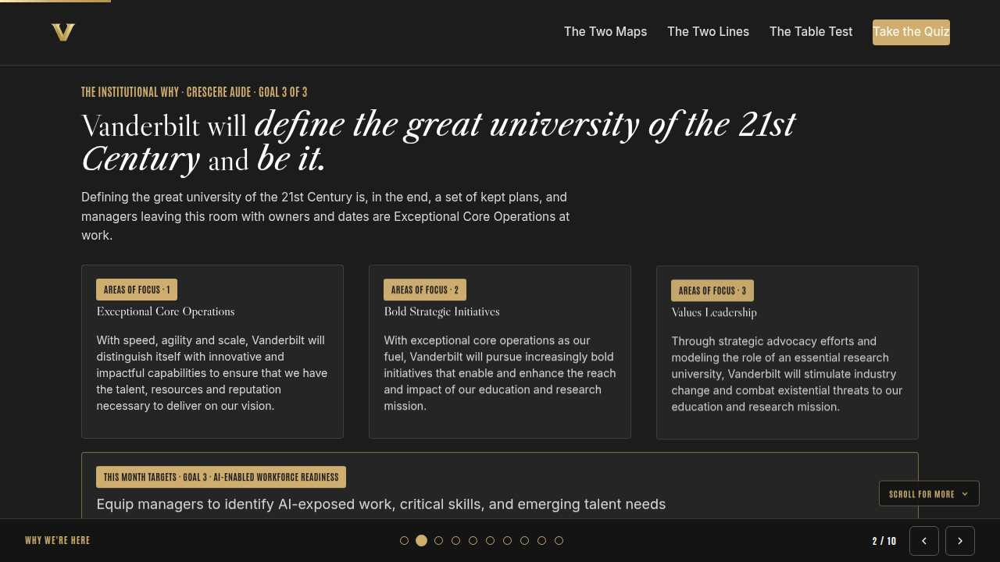
The mission Full 3 min · Core 2
Anchor the session in the Chancellor's charge so the next 40 minutes read as mission work, not admin.
Say
“This year of learning hangs off one sentence from the Chancellor: Vanderbilt will define the great university of the 21st Century and be it. Defining the great university of the 21st Century is, in the end, a set of kept plans. Managers leaving this room with owners and dates are Exceptional Core Operations turning a year of seeing into a season of doing.”
Do
- Read the mission line slowly, once.
- Point at the tie-in line and let it sit; no discussion needed here.
Transition: “That is the why. Here is the number we are moving.”
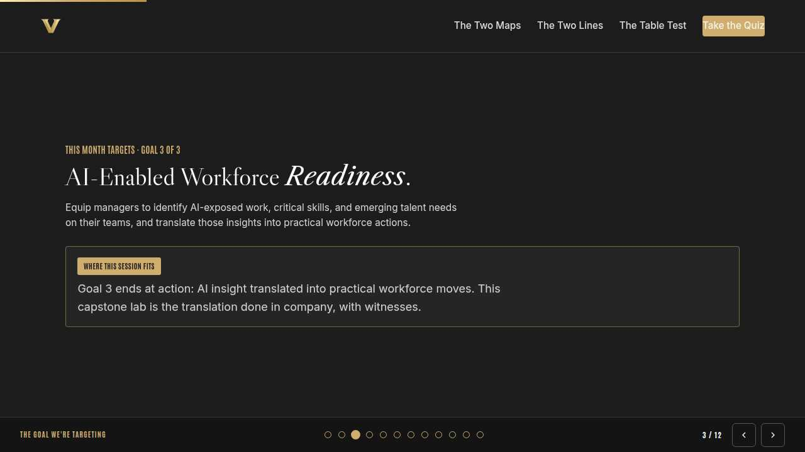
The goal we are targeting Full 3 min · Core 2
Name the enterprise goal this month serves.
Say
“Every month of Anchor's Edge lands on one of three enterprise goals. This month is Goal 3, AI-Enabled Workforce Readiness: Equip managers to identify AI-exposed work, critical skills, and emerging talent needs on their teams, and translate those insights into practical workforce actions. Goal 3 ends at action: AI insight translated into practical workforce moves. This capstone lab is the translation done in company, with witnesses.”
Do
- Read the goal once, plainly.
- One line, not a lecture: this session is one of the moves that serves it.
Transition: “Here is what you will be able to do in 90 minutes.”
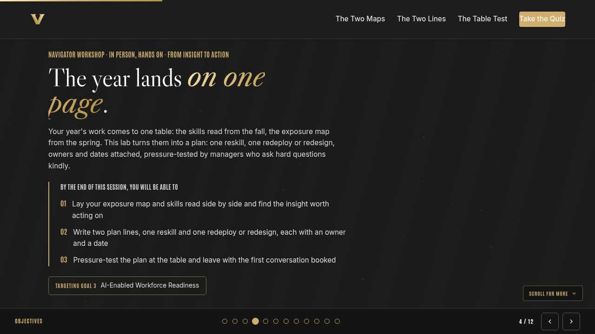
Objectives Full 2 min · Core 1
Set the contract for the session in under a minute.
Say
“By the end of this session: lay your exposure map and skills read side by side and find the insight worth acting on; write two plan lines, one reskill and one redeploy or redesign, each with an owner and a date; pressure-test the plan at the table and leave with the first conversation booked. That is the whole contract.”
Do
- Read the three objectives briskly; do not elaborate yet.
Transition: “Three stops to get there.”
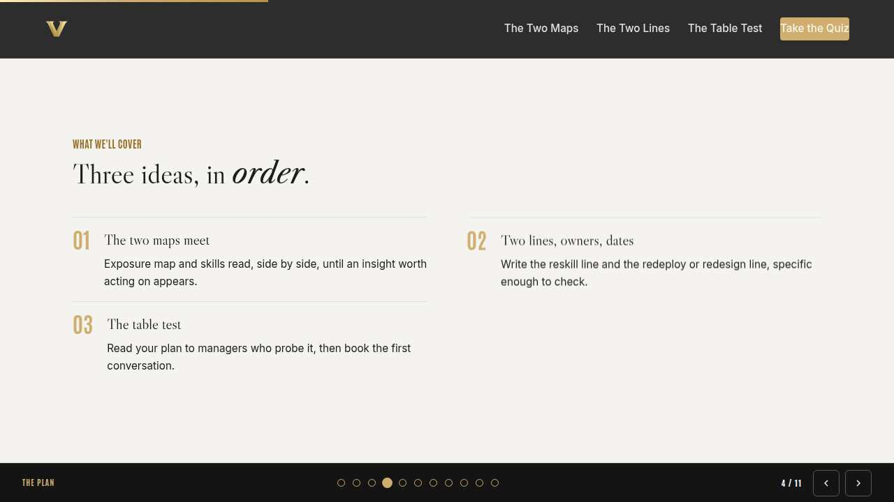
Agenda Full 2 min · Core 1
Show the path so the room can pace itself.
Say
“Three stops: the two maps meet, two lines, owners, dates, the table test. Each one has something to play with, so keep the deck open.”
Do
- Point once at each stop; ten seconds each.
Transition: “Stop one.”
Core path: Core: skip the read-through, gesture at the slide in passing.
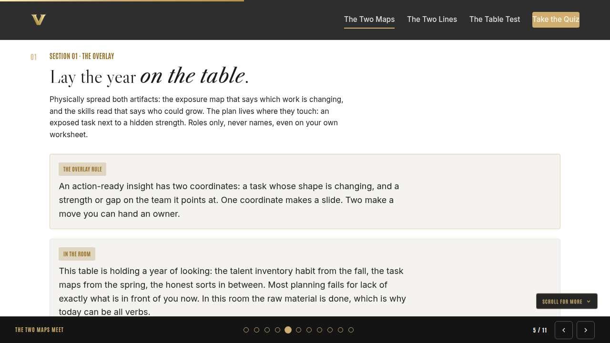
The two maps meet Full 8 min · Core 6
Get both artifacts physically on the table and locate each manager's action-ready insight, roles never names.
Say
“Welcome to the last room of the series year, and the one everything else was furniture for. On your table go two things you built: the exposure map from the spring, which says how the work is changing, and your skills read, the habit you started in the fall, which says who could grow. If either is rough or missing, the blank template and your memory will do; the year is in your head even when it isn't in your bag. We are looking for the places the two maps touch.”
Do
- Give quiet time for spreading out and reacquainting; walk the room and admire the maps out loud, it sets the tone.
- Show the overlay card, then run the discussion: one touchpoint per manager, the table says the move they see.
- Run the neighbor exercise; listen for a clean task-plus-strength pairing to quote at the debrief.
Ask
“What surprised you, seeing both maps at once?”
Expect:
- Strengths sitting right next to exposed tasks
- Gaps with no strength anywhere near them
- Some maps aged; the work changed faster than expected
Respond: All three are findings. A strength beside an exposed task is a plan; a gap with no strength nearby is also a plan, just a different verb.
Debrief: One coordinate is a slide; two are a move. Every manager here just found at least one pair.
Watch for: Names sneaking onto worksheets as the maps get personal. The rule holds hardest in the capstone: roles only, on paper and out loud.
Transition: “You have the insight. Now it becomes two lines with owners and dates.”
Core path: Core: skip the neighbor exercise; each manager marks one touchpoint solo and says it in one sentence at the table.
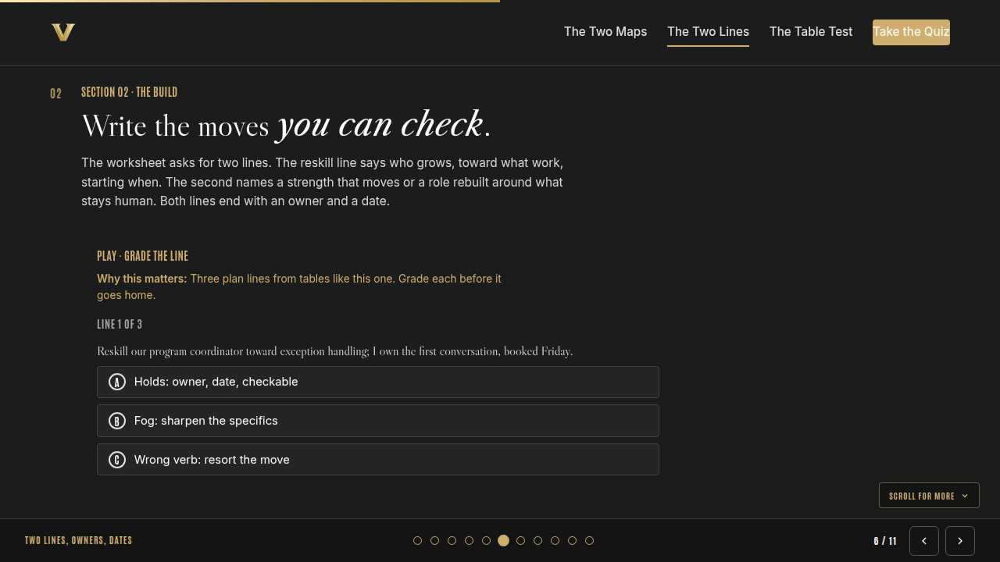
Two lines, owners, dates Full 10 min · Core 7
Draft the reskill line and the redeploy or redesign line, checkable, owned, and dated.
Say
“The plan is deliberately small: two lines. Line one is a reskill: who grows, toward what work, starting when. Line two is a redeploy or a redesign: a strength pointed at new work, or a role rebuilt around what stays human. If a redeploy points past your own team, that is what the Talent Marketplace and the Transfer Portal are for; the university built the doors, and your line can walk through them. Both lines end the same way: an owner and a date. If you cannot check it later, it is not written yet.”
Do
- Run Grade the line on learner devices first, so the holds, fog, and wrong-verb tells are shared.
- Quiet drafting on the worksheet; walk the room and ask 'meaning what?' at any fog.
- Run the partner read-aloud; rewrites happen at the table with the marker, never later.
Ask
“Which line came harder, the reskill or the redeploy and redesign?”
Expect:
- Reskill easier; training feels familiar
- Redesign harder; rebuilding a role feels above a manager's desk
- Dates harder than either
Respond: Redesign feels big because it is honest. Start the line anyway; the table test will tell you whether it needs a partner in HR, and that ask becomes step one.
Debrief: Two lines, four properties each: a verb, a role, an owner, a date. The whole year fits in two sentences, which was always the point.
Watch for: Hire creeping in as a first verb. Run the order aloud: reskill, redeploy, redesign, then hire, when the first three have honestly failed.
Transition: “The lines exist. Time to let other managers bend them.”
Core path: Core: draft the reskill line fully; the second line can leave as a labeled stub with its owner and date set at the peer check-in.
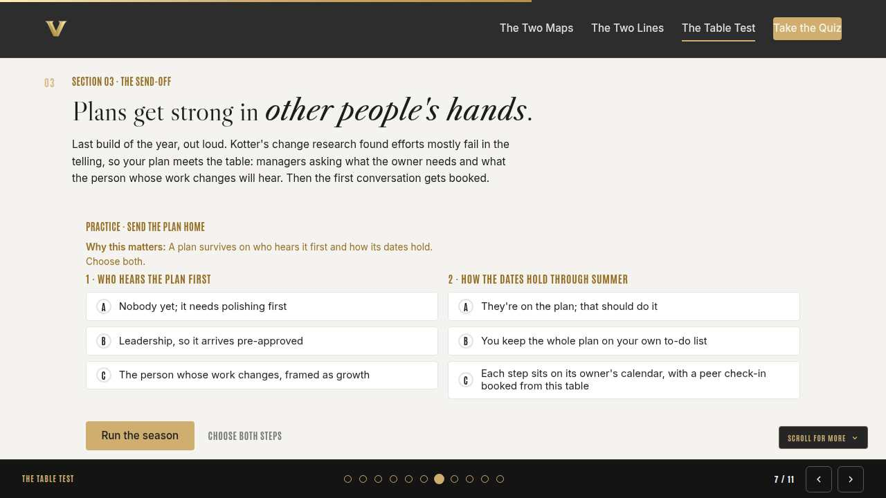
The table test Full 9 min · Core 6
Pressure-test each plan aloud at the table, then convert momentum into a booked first conversation and peer check-in.
Say
“Here is why this lab is in person: plans get strong in other people's hands. You will read your two lines to the table, exactly as written, and take the card questions: what does the owner need, what will the person whose work changes hear, what slips first. Answer, revise, and then do the bravest administrative act of the year: open your calendar and book the first conversation before you leave this room.”
Do
- Run Send the plan home on learner devices; the who-hears-it-first pattern sets up the read-alouds.
- Run the table test: each manager reads, card questions fly, revisions happen on the spot; keep tables moving so everyone gets tested.
- Calendars open: first conversations booked, peer check-ins traded across the table; confirm out loud as they land.
Ask
“What did the table hear in your plan that you couldn't?”
Expect:
- The person's likely first reaction to the move
- A date that was really a hope
- A redesign that needs an HR partner from day one
Respond: That is the lab doing its one job. Every question you just answered is one your team and your leadership no longer get to ask first.
Debrief: Tested, revised, booked: the plan leaves this room already in motion, which is the difference between a capstone and a keepsake.
Watch for: Managers booking the leadership pitch before the investment conversation. Reorder it gently: the person whose work changes hears it first; that order is the message.
Transition: “Recap, the card, and then we close the year properly.”
Core path: Core: the table test runs one line per manager instead of two; the second line gets tested at the peer check-in.
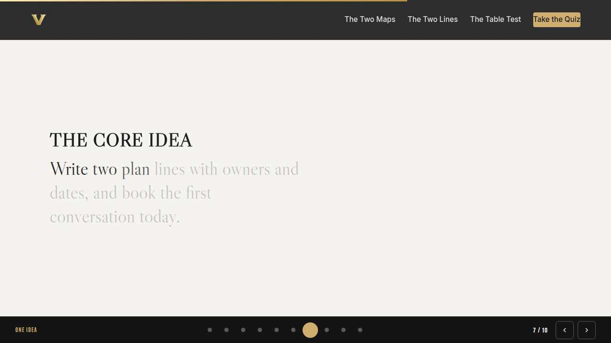
The core idea Full 2 min · Core 1
Land the one sentence the session exists to install.
Say
“If you keep one sentence from today, this is it. Read it once, out loud: A year of insight earns its keep the day it becomes somebody's owned, dated move.”
Do
- Pause two beats after reading; the word animation carries it.
Transition: “The recap makes it stick.”
Core path: Core: pass through in stride; the sentence reads itself.
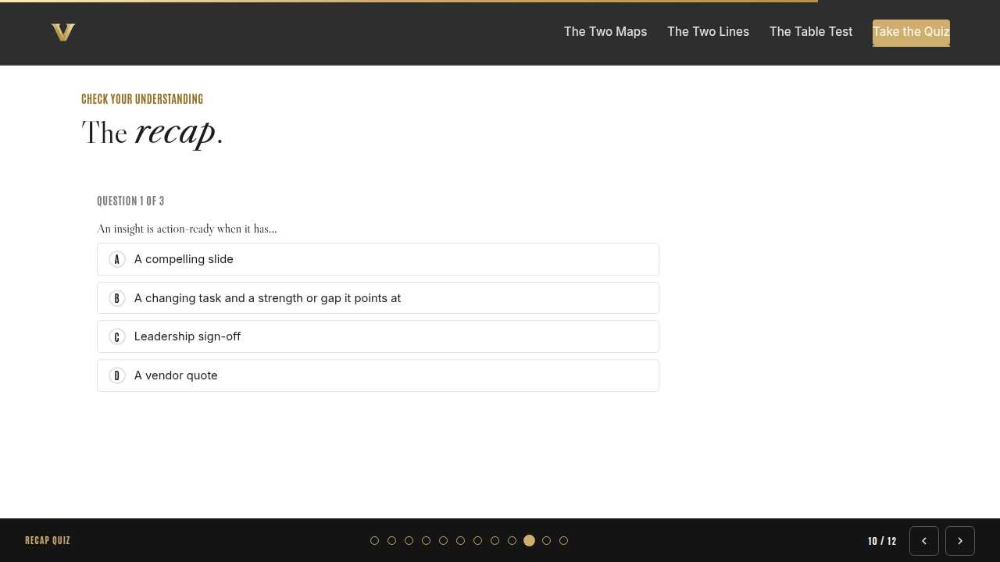
Recap quiz Full 5 min · Core 4
Score the learning while it is fresh; wrong answers are teaching moments, not failures.
Say
“Three questions, on your own screen. Answer honestly; the explanations are where the learning sticks.”
Do
- Give the room 90 seconds to run it individually.
- Ask for a show of results in chat: how many got 3 of 3?
- Read out the explanation for whichever question drew the most misses.
Watch for: Rushing past the why lines. The explanations carry the teaching.
Transition: “Now point it at your real week.”
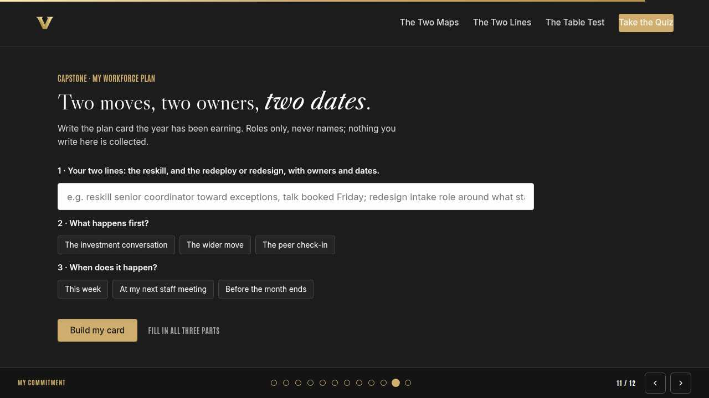
Capstone commitment Full 6 min · Core 4
Convert the session into one named, dated action per person.
Say
“The last card of the year. Two lines, owners, dates, roles never names. Write what happens first and when the peer check-in lands, then copy the card somewhere that survives the summer: the front of a notebook, a photo where you plan your week. This card is the year, folded small enough to carry. Quiet writing time, go.”
Do
- Two quiet minutes; everyone builds their own card.
- Invite two or three volunteers to read their card aloud or paste it in chat.
- Remind: copy the card somewhere you will see it this week.
Watch for: Vague entries. Nudge for a name-able situation and a real date.
Transition: “Last slide.”
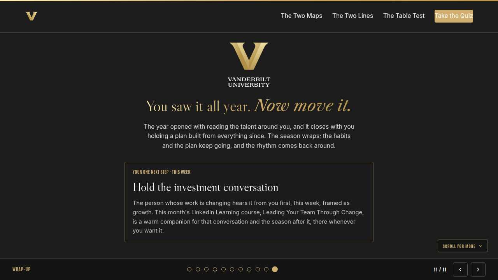
Closing Full 2 min · Core 2
End with the next step and where this thread continues.
Say
“Before you go, look at what this room built: a year of seeing, folded into plans with owners and dates. The month's weekly sessions carry the same push. Monday gave you the four moves you just used, Tuesday has your whole team drafting their own 90-day plans, and Thursday closes the season on deciding while the deciding is good. The season wraps here, warmly. The habits have no end date, the Talent Marketplace and the Transfer Portal stay open, and the rhythm comes back around with room to grow. If you want company through the change you just planned, this month's LinkedIn Learning course, Leading Your Team Through Change, is there whenever you want it, never homework. Thank you for bringing your year to this table. Go hold the conversation.”
Do
- Point at the next-step card; one sentence.
- Name the rest of the week's rhythm: the other sessions echo this month's theme.
Generated from facilitator/notes.json. The on-screen facilitator edition lives at ./ alongside this guide.